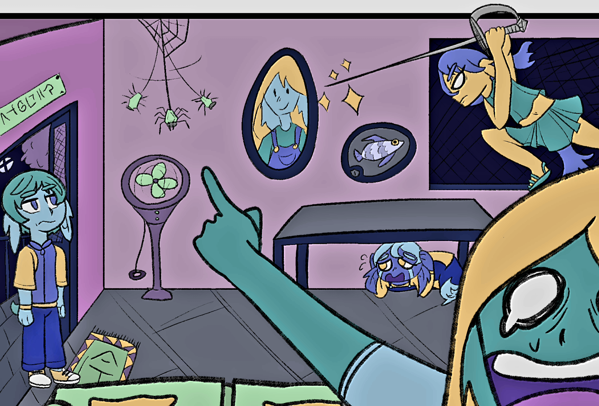
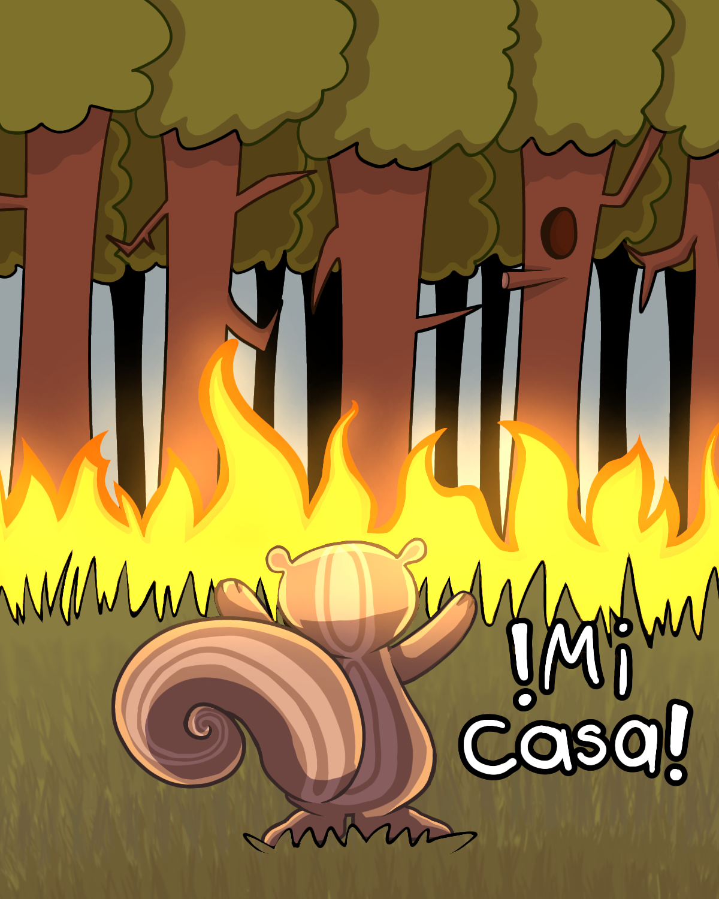
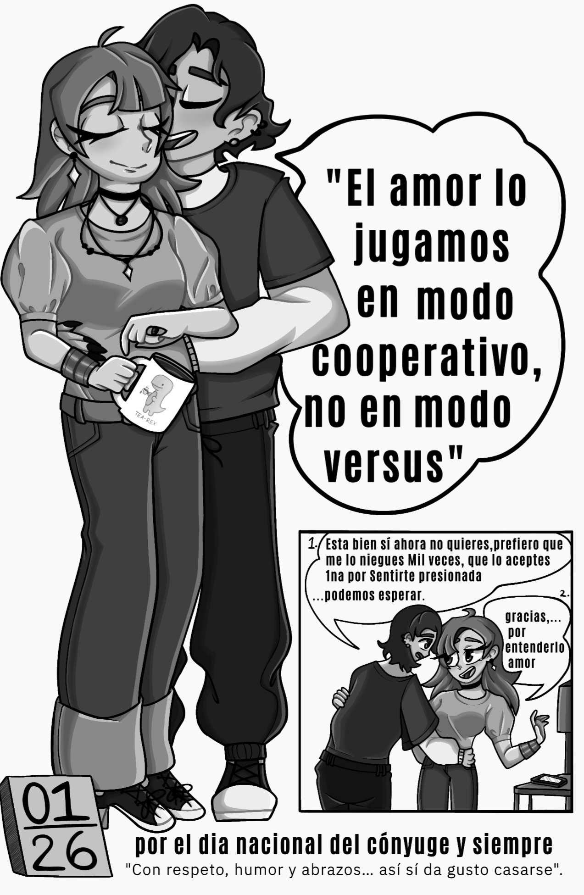
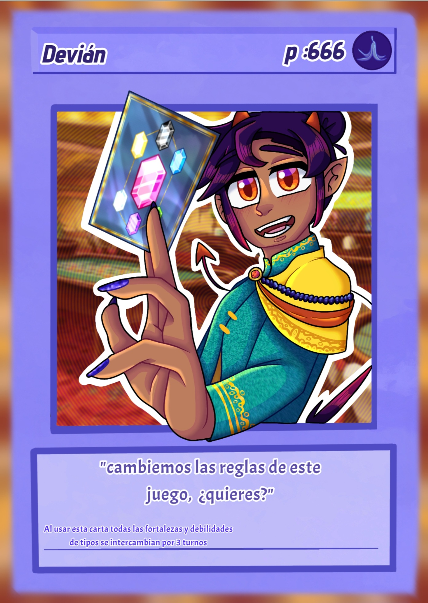
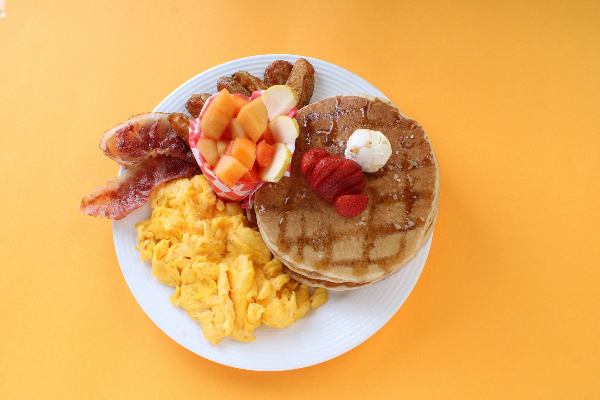

presentacion
Hola, yo soy Renata, una diseñadora grfica en formacion, me especializo en ilustracion y diseño de personajes


En esta parte, encontraras informacion sobre mi, lo que me gusta hacer y para lo que soy buena.
Hola, yo soy Renata, una diseñadora grfica en formacion, me especializo en ilustracion y diseño de personajes
Aqui encontraras muestras de mi trabajo

Un dibujo que hice para un trabajo que consistia en un empaque con causa social.

Un cartel que hice para otro trabajo que se trataba de recrear otro cartel mas vintage.

Una carta estilo pokemon o Yugi ho que hice de un personaje original, porque era divertido.

Un fakemon que hice para un concurso de un yotuber famoso basado en una lagartija domestica y un bandalo de cuidad estilo vaselina.

Una fotografia que hice para una practica.

la fotografia que hice para un examen, se tratan de 2 juguetes que celebran un cumpleaños.

Una casita para sylveon que esta dentro de una pokebola,lo hice para una practica y es un gran dibujo de fondo.

hace tiempo hice una practica de edicion y fotocomposicion de fotografias, el poster esta inspirado en un episiodio que me encanto de una caricatura retro.

Una ilustracion que hice para un examen, son 2 hombres paseando tranquilos en un acuario